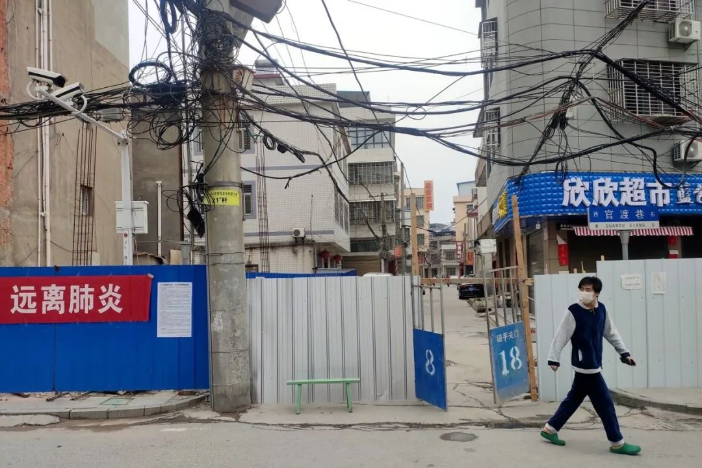
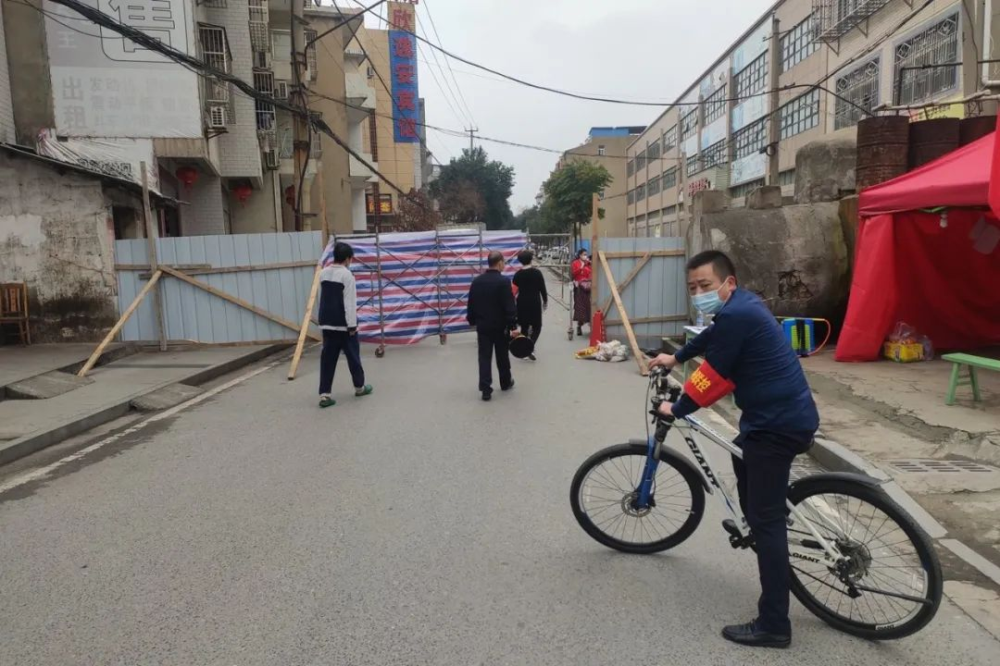

生活的刺
原文链接 备份链接 2020年2月28日。 农历二月初六。 武汉封城第三十七天。 天门封城第三十六天。 阴雨绵绵，闭关继续。当日子渐复寡淡，米兰•昆德拉的“幸福就是重复同样的事情”，就成了在家坐月子自我安慰的一剂良方。感观在重复中沉溺麻 …

**2020年3月8日。
**
农历二月十五。
武汉封城第四十六天。
天门封城第四十五天。
前天未更，小史还特意问我是不是号被封了，这每日的“敷衍”他都转发，不啻为一种鼓舞和动力。其实有想过以Doctor Li去世One month为题，探讨授予“全国防疫（咳咳）先进个人”的荣誉与恢复因“在internet上发表（咳咳）不属实（咳咳）盐论”被xunjie的名誉之间的关系，以及应（那个啥）百姓（咳咳）呼声、奉（那个啥）朝（咳咳）廷（咳咳）之命前往疫区（咳咳）调查的钦（咳咳）差（咳咳）大臣为何下落不明音讯全无？思虑再三，此举无异自讨4（零）4吃。要说今天马航MH370失联6周年了，除了守望的亲属们，谁还记得？
更多时候，是挖空心思绞尽脑汁，考虑如何度过今日，好让今日与昨日、前日有所差别，尽量于往复中找寻可以落笔的素材。但这无异于又陷入另一种我执。记得在姜纬老师摄影训练营时候，为了完成每天布置的作业，包括我在内的很多同学，就苦思冥想废寝忘食。姜sir说他能理解但不赞成，因为这状态失去自由了。“摄影只是你整个的生活里的一小部分，一个小小部分，不代表你整个的生活。要意识到这个，就进退自如了。你可以很痴迷摄影，但是不要影响你的生活。这就是自由！自由就是拿得起放得下。”（详见“真正的摄影通向自由”一文）
那么不纠结罢，有更且更，努力日更。今日外出取菜，闻有治愈出院又复发者，人心仍惶惶未定，小区还戒备森严。
这副对联，真の讽刺。







借此推荐姜纬老师最新一期摄影训练营课程，限时特惠中。详情介绍：感官之旅：姜纬摄影训练营第八期！


水妈
长按二维码向我转账
受苹果公司新规定影响，微信 iOS 版的赞赏功能被关闭，可通过二维码转账支持公众号。
原文链接 备份链接 2020年2月28日。 农历二月初六。 武汉封城第三十七天。 天门封城第三十六天。 阴雨绵绵，闭关继续。当日子渐复寡淡，米兰•昆德拉的“幸福就是重复同样的事情”，就成了在家坐月子自我安慰的一剂良方。感观在重复中沉溺麻 …
原文链接 备份链接 2020年2月29日。 农历二月初七。 武汉封城第三十八天。 天门封城第三十七天。 阴晴不定。 中午大方伯做了翻饺子，尝起来不比买的差，表示非常满意自己的手艺。晚上和小方伯出门取网上订的菜，发现小区门口的街道已被完全封 …
原文链接 备份链接 2020年2月26日。 农历二月初四。 武汉封城第三十五天。 天门封城第三十四天。 淅沥沥的雨竟下了一夜。 猜中一个心照不宣的谜底，失去一场镜花水月的愁绪，破掉一段孤厢情愿的执著——大道理比谁都会讲的我，碰到“心中贼” …
原文链接 备份链接 2020年2月22日。 农历正月廿九。 武汉封城第三十一天。 天门封城第三十天。 印象中，毕业后除了08年那场大雪，迄今没与家人同居如此之久。很多人——当然是没事蜗居在家的人，谈到这次疫情乐观的看法，相当于给自己放了一 …
原文链接 备份链接 2020年2月21日。 农历正月廿八。 武汉封城第三十天。 天门封城第廿九天。 封城一月，本以为可以看到胜利的曙光了，今天的消息感觉仍要打持久战。这病毒狡猾到骗过医护，出院之后竟有复发之虞。有一个观点，看报道在讲，群里 …